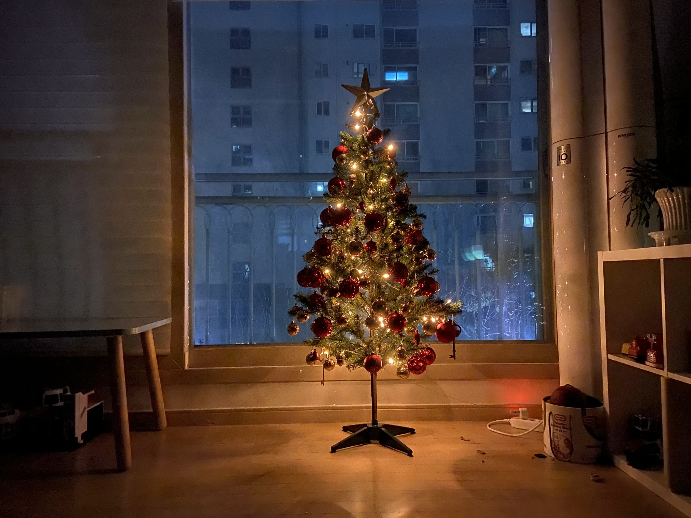
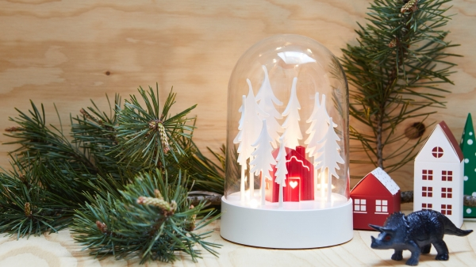
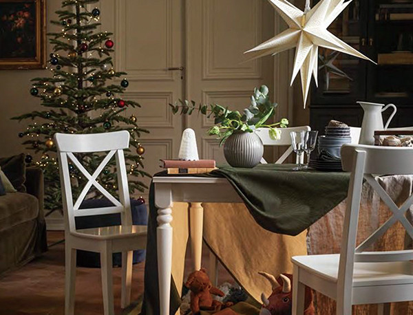
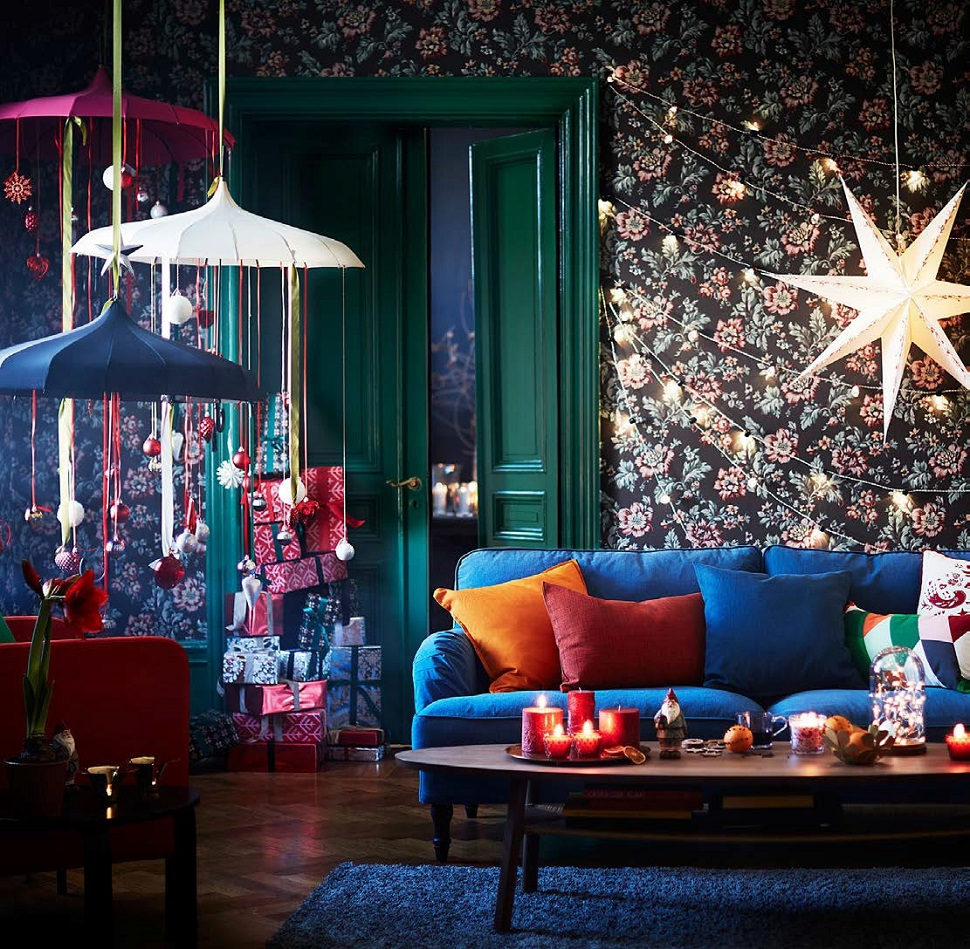

이색적인 크리스마스트리
크리스마스 장식을 더욱 돋보이게 만들고 싶나요? 목재와 곡선형 메탈로 만들어진 크리스마스트리에 좋아하는 장식들을 걸어주면 나만의 개성 넘치는 크리스마스트리를 만들 수 있어요.

아름답게 밤을 빛내는 크리스마스 조명
LED 탁상스탠드를 켜면 따뜻한 조명이 퍼져서 전등갓의 장식을 비춥니다. 커피테이블이나 주방 창문 또는 현관의 서랍장에 올려놓으면 어떨까요?

내 취향에 맞게 집안을 크리스마스 분위기로 가득 채워보세요
크리스마스를 기다리는 하루하루가 특별할 수 있도록, VINTERFINT 빈테르핀트 크리스마스 달력에 깜짝 놀란만 한 작은 선물들을 숨겨두세요. 매일 한 칸씩 열어보는 기쁨을 맛보면서 즐겁게 크리스마스까지 카운트다운을 할 수 있을 거예요.

재미있게 크리스마스를 기다리는 방법
크리스마스 시즌이 다가오고 있어요. 우리의 마음과 집을 신나는 축제 분위기로 채울 시간이죠. 새로 나온 VINTERFINT 빈테르핀트 컬렉션과 STRÅLA 스트롤라 크리스마스 조명 시리즈를 만나보세요. 꿈에 그리던 동화 같은 크리스마스를 집에서 맞이할 수 있을 거예요.